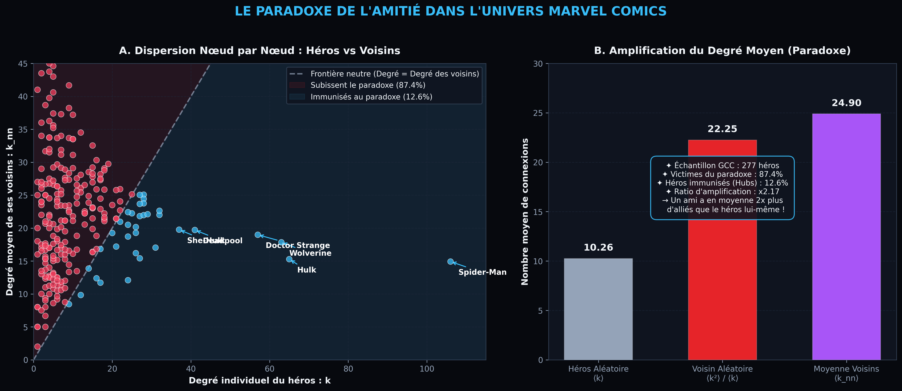
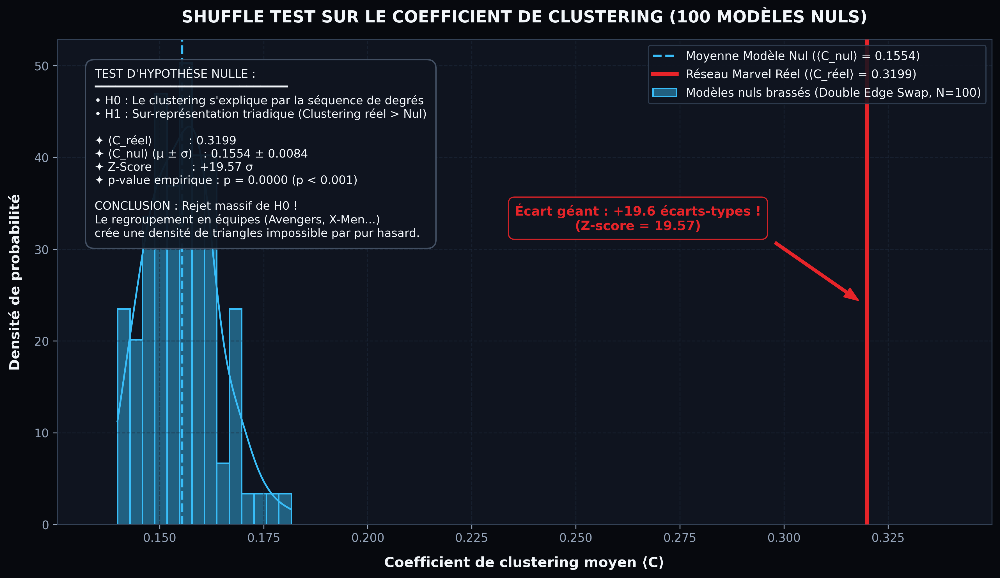

Vous êtes-vous déjà senti moins populaire que vos amis sur les réseaux sociaux ? Rassurez-vous : 87,4 % des super-héros Marvel ressentent exactement la même chose. Dans les pages de comics comme sur Instagram, vos amis ont presque systématiquement plus d'amis que vous. Mais pourquoi ce phénomène mathématique survient-il, et comment prouver que les équipes de super-héros (Avengers, X-Men) ne sont pas un simple artefact du hasard ? Plongée computationnelle au cœur de la composante géante du graphe Marvel.
1. Introduction : Quand la Topologie Bouscule l'Intuition
Dans le cadre de l'Exercice 2.11 ("Go nuts with your LLM") du cours DTU 02805 (Social Graphs and Interactions), nous poussons l'analyse du réseau Marvel au-delà des simples métriques descriptives. En nous focalisant sur la composante géante connexe (GCC) du réseau — regroupant 277 super-héros et 1 421 alliances non-orientées — nous allons disséquer deux énigmes fondamentales de la science des réseaux :
- Le paradoxe de l'amitié : Pourquoi vos voisins sont-ils mathématiquement plus connectés que vous, qui sont les "coupables" qui tirent cette moyenne vers le haut, et qui parvient à y échapper ?
- Le test du modèle nul (Shuffle Test) : Le fort taux de regroupement (clustering) des héros est-il un simple sous-produit de l'existence de quelques stars ultra-connectées, ou le reflet indéniable d'une véritable structure en communautés ?
2. Le Paradoxe de l'Amitié chez les Super-Héros
Formulé pour la première fois par le sociologue Scott L. Feld en 1991, le paradoxe de l'amitié énonce que « vos amis ont en moyenne plus d'amis que vous ». Appliquons ce principe aux données réelles de Marvel.
A. Les chiffres bruts du réseau
Si l'on tire au sort un personnage de la composante géante avec une probabilité uniforme, son degré moyen est de :
⟨k⟩ = 10,26 connexions
En revanche, si l'on prend ce même personnage et que l'on choisit au hasard l'un de ses voisins (ou si l'on échantillonne une arête aléatoire), le degré moyen de ce voisin explose :
⟨kvoisin⟩ = 22,25 connexions | Moyenne des voisins ⟨knn⟩ = 24,90
Résultat : Les partenaires d'un super-héros ont en moyenne plus de deux fois plus d'alliés (x2,17) que lui-même !
Ce phénomène n'est pas un biais psychologique, mais une propriété géométrique stricte. Dans tout réseau hétérogène, la probabilité d'atteindre un nœud en suivant une arête aléatoire est proportionnelle à son degré k. L'espérance du degré d'un voisin s'écrit :
⟨kvoisin⟩ = ⟨k²⟩ / ⟨k⟩ = ⟨k⟩ + σk² / ⟨k⟩
Dès lors que la variance des degrés est non nulle (σk² = 123,04 dans notre réseau Marvel), ⟨kvoisin⟩ est strictement supérieur à ⟨k⟩. Plus le réseau contient des super-hubs, plus l'écart se creuse !
B. Qui sont les Hubs responsables du paradoxe ?
Les "coupables" sont les héros omniprésents qui apparaissent dans le carnet d'adresses d'une multitude d'autres personnages. En étant les voisins de presque tout le monde, ils tirent la moyenne de leurs pairs vers le haut.
| Super-Héros (Hub) | Degré Réel (k) | Degré Moyen de ses Voisins (k_nn) | Excédent (k - k_nn) |
|---|---|---|---|
| 01 Spider-Man | 106 | 14,92 | +91,08 |
| 02 Hulk | 65 | 15,28 | +49,72 |
| 03 Wolverine | 63 | 17,84 | +45,16 |
| 04 Doctor Strange | 57 | 18,98 | +38,02 |
| 05 Deadpool | 41 | 19,71 | +21,29 |
| 06 She-Hulk | 37 | 19,76 | +17,24 |
| 07 Black Panther | 31 | 17,03 | +13,97 |
C. Qui échappe au paradoxe ?
Un personnage ne subit pas le paradoxe si son propre degré est supérieur ou égal au degré moyen de ses voisins (ki ≥ knn, i). Dans le réseau Marvel :
- Seulement 35 super-héros sur 277 (12,6 %) sont immunisés contre le paradoxe. Ils constituent l'aristocratie ultra-connectée de l'univers (Spider-Man, Wolverine, Hulk, Dr. Strange, etc.).
- 242 super-héros (87,4 %) subissent le paradoxe de plein fouet : leurs alliés ont systématiquement plus de connexions qu'eux.

3. Le Shuffle Test : Le Hasard Explique-t-il les Regroupements ?
Dans notre premier article, nous avons constaté que le réseau Marvel possède un coefficient de clustering moyen très élevé :
⟨Créel⟩ = 0,3199 (Transitivité T = 0,1823)
Mais une question critique de science des réseaux se pose : cette propension à former des triangles d'alliés est-elle simplement une conséquence mécanique du fait que certains héros ont un degré énorme ? En effet, deux héros reliés au hasard à Spider-Man ont naturellement une chance non nulle d'être aussi connectés entre eux.
A. Le protocole du Modèle Nul préservant les degrés
Pour tester rigoureusement cette hypothèse, nous utilisons l'algorithme de double permutation d'arêtes (Double Edge Swap) avec la fonction nx.double_edge_swap de NetworkX :
- On sélectionne deux arêtes aléatoires (u, v) et (x, y) sans lien croisé préexistant.
- On les permute pour former (u, y) et (x, v).
- On répète l'opération 14 210 fois par réseau (soit 10 fois le nombre total d'arêtes) pour détruire toute corrélation locale tout en préservant à 100 % le degré exact de chaque personnage.
- On génère 100 réplicats indépendants de ce modèle nul.
B. Résultats statistiques et Z-score
La distribution des coefficients de clustering mesurés sur ces 100 réseaux synthétiques donne un résultat spectaculaire :
- Moyenne du modèle nul : ⟨Cnul⟩ = 0,1554 ± 0,0084 (extrêmes : [0,1399 ; 0,1816])
- Clustering réel : ⟨Créel⟩ = 0,3199
- Z-score du clustering : +19,57 σ
- p-value empirique : p = 0,0000 (p < 10-3)

Ce test prouve de manière irréfutable le rejet massif de l'hypothèse nulle. Certes, avoir des super-hubs fait passer le clustering de 0,04 (dans un graphe d'Erdős-Rényi sans hubs) à 0,15. Mais cela n'explique que la moitié de la cohésion observée !
Le fossé restant (+19,6 σ) est l'empreinte mathématique directe de la fermeture triadique sociale et narrative : dans Marvel, les héros s'organisent en équipes soudées (Avengers, Fantastic Four, X-Men, Defenders). L'allié de mon allié est très souvent mon allié parce que nous partageons la même faction, la même base d'opérations ou le même arc éditorial.
4. Conclusion & Ce que la Science des Réseaux nous Enseigne
Cette exploration computationnelle de l'Exercice 2.11 démontre la richesse inépuisable des graphes de comics :
- Le paradoxe de l'amitié n'épargne personne : Moins de 13 % des héros (les super-hubs majeurs comme Spider-Man ou Wolverine) sont plus populaires que leurs pairs. Les 87 % restants gravitent autour d'alliés beaucoup plus connectés qu'eux.
- La structure en communautés est réelle : Le clustering exceptionnel de l'univers Marvel n'est pas un artefact causé par la popularité de quelques icônes. C'est le résultat d'une modularité narrative dense forgée par 80 ans d'alliances collectives.
En combinant rigueur mathématique, modèles nuls et visualisations sur-mesure, la science des réseaux transforme un univers fictif en un laboratoire fascinant pour comprendre les architectures relationnelles du monde réel.